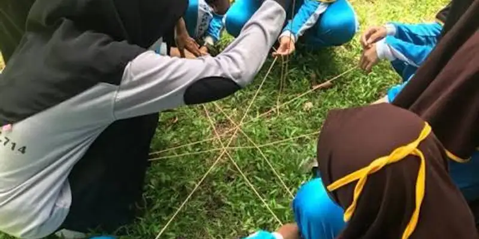

Corporate gathering adalah kegiatan kebersamaan perusahaan yang membutuhkan budgeting jelas dan terstruktur agar proposal anggaran lebih mudah disetujui oleh manajemen atau atasan.
Ringkasan Inti
- Corporate gathering bertujuan membangun kekompakan tim dan menyegarkan suasana kerja karyawan
- Budgeting yang jelas dan terperinci meningkatkan peluang proposal disetujui atasan
- Proposal sebaiknya mencantumkan tujuan kegiatan, rincian biaya, dan manfaat bagi perusahaan
- Perbandingan beberapa opsi vendor dapat memperkuat kredibilitas proposal anggaran
- Evaluasi setelah kegiatan membantu penyusunan budgeting corporate gathering berikutnya lebih akurat
Apa Itu Corporate Gathering dan Mengapa Perusahaan Mengadakannya?
Corporate gathering adalah kegiatan berkumpulnya karyawan dalam suasana informal yang bertujuan mempererat hubungan antar tim, menyegarkan suasana kerja, dan memperkuat budaya perusahaan.
Kegiatan ini biasanya dikemas dalam bentuk acara kebersamaan seperti outbound, gathering tahunan, atau family day yang melibatkan karyawan beserta keluarga. Perusahaan mengadakan corporate gathering karena kegiatan semacam ini dianggap dapat membantu menyegarkan semangat kerja karyawan, mengurangi kejenuhan rutinitas, serta mempererat hubungan antar divisi yang mungkin jarang berinteraksi langsung dalam pekerjaan sehari-hari.
Selain manfaat internal, corporate gathering juga dapat menjadi sarana bagi manajemen untuk menyampaikan apresiasi kepada karyawan atas kinerja yang telah dicapai sepanjang periode tertentu.
Bagaimana Cara Menyusun Budgeting Outbound agar Mudah Disetujui Atasan?
Budgeting outbound akan lebih mudah disetujui atasan apabila disusun secara terperinci, mencantumkan tujuan yang jelas, dan menunjukkan manfaat kegiatan yang relevan dengan kebutuhan perusahaan.
Beberapa langkah yang dapat diterapkan dalam menyusun budgeting outbound meliputi:
- Menjelaskan tujuan kegiatan secara spesifik, misalnya untuk meningkatkan kekompakan tim atau menyambut pencapaian target perusahaan
- Menyusun rincian anggaran per komponen, seperti lokasi, konsumsi, transportasi, dan honor vendor
- Membandingkan beberapa opsi vendor untuk menunjukkan bahwa anggaran yang diajukan sudah melalui proses pertimbangan
- Menyertakan proyeksi manfaat kegiatan terhadap produktivitas atau kekompakan tim setelah acara berlangsung
- Menyiapkan opsi anggaran alternatif, misalnya paket standar dan paket hemat, agar atasan memiliki pilihan sesuai kondisi keuangan perusahaan
Penyusunan yang terstruktur seperti ini membantu atasan memahami alasan di balik setiap komponen biaya, sehingga proses persetujuan dapat berjalan lebih cepat.
Apa Saja Komponen Anggaran yang Perlu Dimasukkan dalam Proposal Corporate Gathering?
Komponen anggaran yang perlu dimasukkan dalam proposal corporate gathering meliputi sewa lokasi, konsumsi, transportasi, honor vendor atau fasilitator, dan biaya dokumentasi kegiatan.
Setiap komponen sebaiknya dijelaskan secara rinci dalam proposal, termasuk estimasi biaya per orang atau per kelompok, agar atasan dapat menilai kewajaran anggaran yang diajukan. Selain komponen utama tersebut, proposal juga sebaiknya mencantumkan estimasi jumlah peserta, durasi kegiatan, serta lokasi yang direncanakan, karena informasi ini menjadi dasar perhitungan sebagian besar komponen biaya lainnya.
Menyertakan dana cadangan dalam proposal juga dapat menjadi pertimbangan bijak untuk mengantisipasi perubahan kondisi di lapangan, seperti perubahan cuaca atau penyesuaian jumlah peserta mendekati hari pelaksanaan.

Berdiskusi secara langsung dengan vendor membantu tim penyelenggara mendapatkan gambaran biaya riil sebelum menyusun proposal ke manajemen.
Bagaimana Cara Menentukan Tujuan Corporate Gathering yang Jelas?
Tujuan corporate gathering yang jelas dapat ditentukan dengan mengaitkan kegiatan pada kebutuhan spesifik perusahaan, seperti penguatan budaya kerja, apresiasi kinerja, atau penyegaran tim setelah periode kerja yang padat.
Sebelum menyusun proposal, tim penyelenggara sebaiknya mendiskusikan terlebih dahulu alasan utama diadakannya corporate gathering, apakah untuk merayakan pencapaian target, menyambut anggota tim baru, atau sekadar menjaga kekompakan tim secara berkala. Tujuan yang jelas ini kemudian dapat dijadikan dasar argumen dalam proposal anggaran, karena atasan cenderung lebih mudah menyetujui pengeluaran yang memiliki alasan bisnis yang konkret dibanding kegiatan tanpa tujuan spesifik.
Bagaimana Cara Membandingkan Vendor Outbound untuk Corporate Gathering?
Vendor outbound untuk corporate gathering dapat dibandingkan berdasarkan pengalaman menangani acara perusahaan, kelengkapan paket, serta transparansi rincian biaya yang ditawarkan.
Perusahaan sebaiknya meminta penawaran dari beberapa vendor sekaligus untuk dibandingkan, termasuk rincian apa saja yang tercakup dalam masing-masing paket, seperti instruktur, peralatan, konsumsi, dan dokumentasi kegiatan. Salah satu vendor yang menyediakan layanan outbound untuk kebutuhan corporate gathering adalah Gemilang Katun Outbound, yang dapat menjadi salah satu opsi pembanding dalam menyusun proposal anggaran sebelum perusahaan menetapkan pilihan akhir.
Membandingkan beberapa penawaran vendor juga memberikan nilai tambah pada proposal, karena menunjukkan bahwa anggaran yang diajukan telah melalui proses evaluasi, bukan sekadar estimasi tanpa dasar perbandingan.
Apa Kesalahan Umum dalam Menyusun Proposal Budgeting Corporate Gathering?
Kesalahan umum dalam menyusun proposal budgeting corporate gathering meliputi rincian anggaran yang tidak jelas, tidak adanya perbandingan vendor, serta kurangnya penjelasan mengenai manfaat kegiatan bagi perusahaan.
Beberapa kesalahan lain yang sering ditemui antara lain mengajukan anggaran dalam bentuk angka global tanpa rincian komponen, tidak mencantumkan estimasi jumlah peserta secara pasti, serta tidak menyertakan opsi anggaran alternatif yang dapat memudahkan atasan mempertimbangkan keputusan. Proposal yang terlalu umum tanpa data pendukung cenderung lebih sulit disetujui dibanding proposal yang disusun secara terperinci dan disertai alasan bisnis yang jelas.
Bagaimana Cara Menyampaikan Proposal Budgeting agar Lebih Meyakinkan?
Proposal budgeting akan lebih meyakinkan apabila disampaikan dengan data pendukung yang jelas, perbandingan opsi anggaran, dan penjelasan manfaat kegiatan yang dikaitkan langsung dengan tujuan perusahaan.
Selain menyusun dokumen tertulis yang rapi, tim penyelenggara juga sebaiknya mempersiapkan penjelasan singkat mengenai latar belakang kebutuhan kegiatan saat mempresentasikan proposal kepada atasan. Menyampaikan proyeksi manfaat, seperti potensi peningkatan kekompakan tim atau apresiasi terhadap pencapaian kerja, dapat membantu atasan melihat nilai kegiatan tidak hanya dari sisi biaya, tetapi juga dari sisi dampak jangka menengah terhadap suasana kerja perusahaan.
Kesimpulan
Menyusun budgeting corporate gathering yang mudah disetujui atasan memerlukan kejelasan tujuan, rincian anggaran yang terperinci, serta perbandingan vendor sebagai dasar pengambilan keputusan. Proposal yang disusun secara terstruktur dan disertai data pendukung cenderung lebih meyakinkan dibanding proposal yang hanya berisi estimasi biaya secara umum. Dengan pendekatan yang tepat, tim HRD dapat menyusun anggaran corporate gathering yang realistis sekaligus relevan dengan kebutuhan perusahaan.
FAQ
Waktu penyusunan dapat bervariasi tergantung skala acara, namun sebaiknya dilakukan jauh sebelum tanggal pelaksanaan agar ada cukup waktu untuk perbandingan vendor dan proses persetujuan.
Mencantumkan lebih dari satu opsi anggaran, seperti paket standar dan paket hemat, dapat membantu atasan mempertimbangkan keputusan sesuai kondisi keuangan perusahaan.
Tim penyelenggara dapat meninjau kembali komponen biaya, menyesuaikan skala kegiatan, atau menawarkan opsi anggaran yang lebih hemat sebagai alternatif.
Tidak selalu, namun penggunaan vendor berpengalaman dapat membantu memastikan kegiatan berjalan terstruktur, terutama untuk perusahaan dengan jumlah peserta yang cukup besar.
Keberhasilan dapat dievaluasi melalui umpan balik peserta serta pengamatan terhadap perubahan komunikasi dan kekompakan tim dalam jangka menengah setelah kegiatan berlangsung.